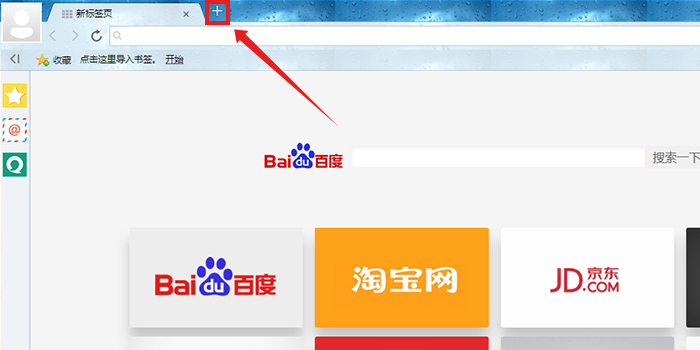

打开网页：单击标签栏的“+”号按钮，或者右击标签栏的空白处均可打开新网页，如下图所示。
关闭网页：单击需要关闭的标签页右侧的“X”按钮，或者双击需要关闭的标签页均可关闭，如下图所示:
主页是浏览器启动时自动打开的网页。
点击工具菜单中设置，进入选项即可自由设置主页。
千兆浏览器会在访问需要IE内核的网银等网站时，您可以切换成IE兼容内核，以便顺利访问、支付。
您可通过江苏音符官网http://www.jsinfo.net/qianzhao/index.html下载千兆浏览器校园版或千兆浏览器标准版。
首先需要您连接电信校园宽带并下载千兆浏览器校园版，然后在搜索栏位置点击“火箭”图标。弹出对话框“每天免费体验1小时”，点击“立即体验”，即可进入校园双速网体验时间。
如果在体验过程中需要暂时中断体验，可点击“退出体验”即可退出体验。
体验时间到，将自动结束双速网体验。
您可通过右上角选项菜单中的“意见反馈”选项告知我们您想反映的问题。也可以通过http://www.jsinfo.net/qianzhao/help.html反映您的问题。
您可通过线上客服、0571-87062902-8004客服电话、中国电信客服10000号等方式联系我们。
您可通过右上角选项菜单中的“设置”选项进入浏览器设置页面。在页面下方点击“显示高级设置…”
在隐私设置中点击“清除浏览数据”
在弹出的对话框中选中“删除 Cookie 以及其他网站数据和插件数据”，然后点击“清除浏览数据”按钮，即可清除cookie。
打开网页：单击标签栏的“+”号按钮，或者右击标签栏的空白处均可打开新网页，如下图所示。
点击收藏右侧的下拉按钮，选择导入/导出即可。
您可以使用快捷键来快捷使用浏览器的功能，以下是千兆浏览器的快捷键：
选中地址栏： Alt + DCtrl + L
弹出地址栏下拉列表： F4
显示/隐藏侧边栏： Ctrl + Shift + S
显示/隐藏收藏栏： Ctrl + B
全屏显示： F11
打开新窗口： Ctrl + N
新建无痕（小号）窗口： Ctrl + Shift + N
新建标签： Ctrl + T
关闭当前标签： Ctrl + F4Ctrl + W
切换到下一个标签： Ctrl + TabCtrl + PgDownF3
切换到上一个标签 ：Ctrl + Shift + TabCtrl + PgUpF2
复制标签： Ctrl + K
恢复最后关闭页面： Ctrl + Shift + TAlt + ZCtrl + E
关闭全部标签： Ctrl + Shift + W
添加收藏 ：Ctrl + D
打印： Ctrl + P
保存网页： Ctrl + S
页面内查找： Ctrl + F
页面放大： Ctrl + =Ctrl + Shift + =Ctrl + Num+
恢复页面到100%： Ctrl + 0Ctrl + Num0
页面缩小： Ctrl + -Ctrl + Shift + -Ctrl + Num-
将当前页面保存为图片： Ctrl + M
打开文件： Ctrl + O
开发人员工具： Ctrl + Shift + IF12
浏览器静音： Ctrl + Shift + M
刷新（重新载入）： Ctrl + RF5
查看历史记录： Ctrl + H
打开下载管理器： Ctrl + J
清除上网痕迹： Ctrl + Shift + Delete
帮助： F1
点击宽带拨号，填写宽带账号即可上网。